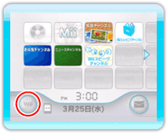
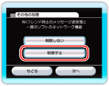

ペアレンタルコントロールとは、未成年の方が使用される場合、その保護者が対象となるコンテンツの使用を制限するための機能です。保護者の方がWiiスピークチャンネルの使用を制限したい場合は、次の手順に従って設定を変更してください。
17 |
ペアレンタルコントロール |
 |
|

1.WiiメニューのWiiオプションを選んでください。

2.「Wii本体設定」→「ペアレンタルコントロール」 ※お使いのWiiメニューのバージョンによっては、表示される項目名が異なる場合があります。 |
 |
 |